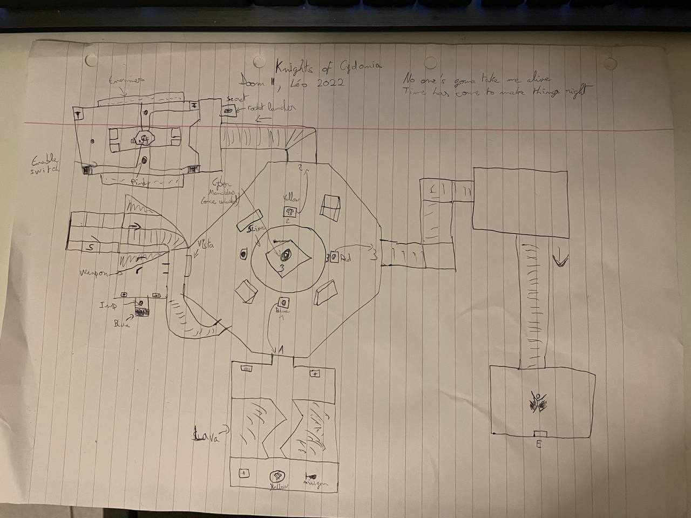
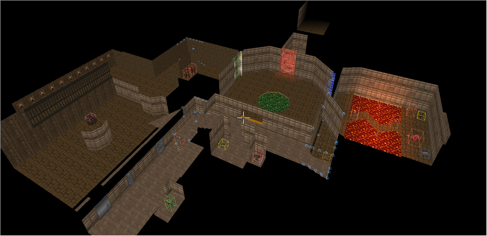
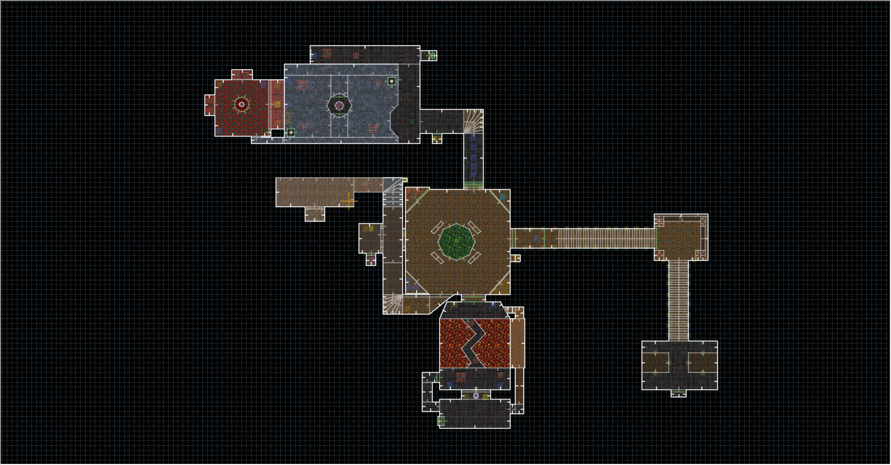

Where the Knights Meet
Description and project workflow.
Description
- Solo
- 3 weeks
- Master JMIN work assignment
- GZDoom
Where the Knights Meet is a DOOM II level where the player has to escape and fight enemies on their way, in old DOOM fashion. The variation, reuse of space and the staging in this map try to capture the vibe from levels of the 90s.
Project workflow
I first started looking for ideas for a theme and a subsequent layout for my level.
Maps are made in Ultimate DOOM Builder. As I am accustomed to Hammer and TrenchBroom, getting familiar with the software was quick. I follow the layout I drew on paper and quickly, I have something close to what I imagined.
But during my tests, I realize the level has some design problems, such as walls hiding essential items to progress in the level. If you know DOOM's automap feature, this is not a problem as you can easily look for hidden paths, but not every player knows of it and we have to take that into account. So, I reworked several rooms to put those items in the front light, which in turn, allowed the map to have a longer playtime.
Each room has a dedicated purpose, but the arena has several purposes. First, it introduces the player to the map's rule: there are 3 doors to unlock one after the other in order to leave. The door on the right has the key to the door on the left, the arena becomes a "corridor" leading to those doors. Once the player has all the keys, the arena returns to being... an arena where the player enters a final fight.
This section of the level needs to be reworked. Hiding spots aren't placed well enough and in good dimensions to be enjoyable, the final weapon unlock and its ammo are in a weird place, and winning the battle ends up being dependant on luck rather than skill if you are not used to playing DOOM levels, which can make it very frustrating.